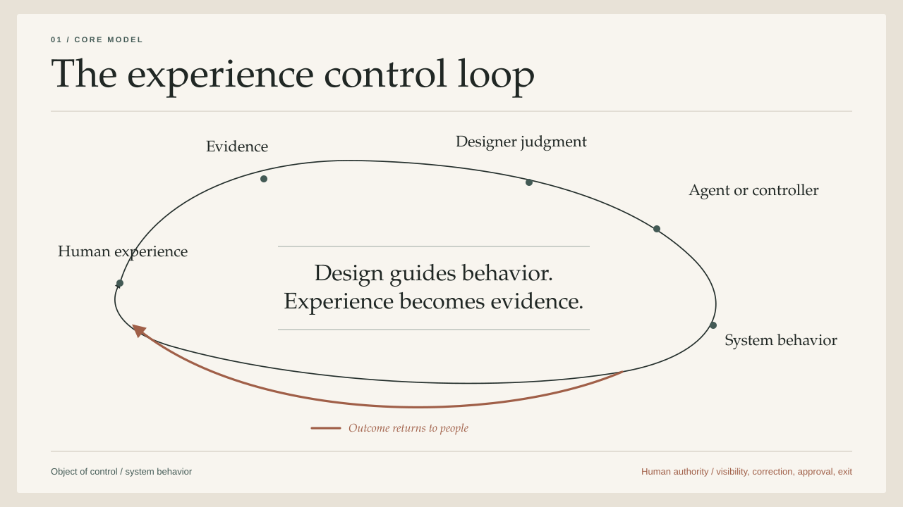
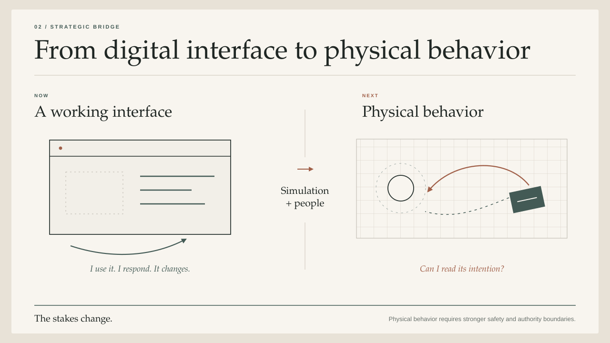
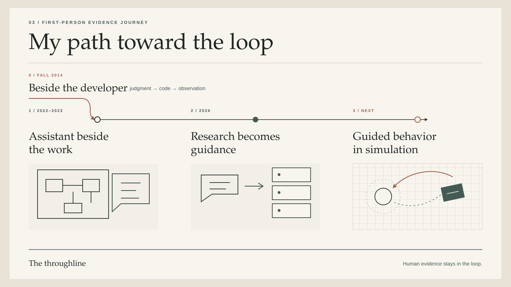

Closed-Loop Experience Design
Designing with the systems that create the experience.
Design can reach into the mechanism that produces the experience.
In 2014, I began wondering what design would look like when the system creating an experience could interpret design intent directly. Coding agents have now made that relationship practical in digital products: I can express an experience, inspect a working implementation, respond from inside it, and guide the next change.
This essay traces that idea from its origin in engineering software and controlled systems to my current AI design practice. It then asks how the same loop could help designers shape physical system behavior through simulation, research with affected people, and clear human authority.
The Controller Was Already in My Design World
Around the fall of 2014, I began asking a question that has stayed with me: What happens when a designer's work is consumed directly by the system that creates the experience?
In engineering, a controller is the part of a system that keeps its behavior moving toward a goal. It reads the current state, compares it with the desired state, takes an action, and uses the result to decide what to do next.
At the time, I was designing software for engineers. Two parts of the same role were beginning to meet.
Inside the product team, I found one of my most fulfilling ways to design. I would sit next to a JavaScript developer and make interface changes with them. We might start with a heuristic, gather whatever user or product evidence we could get quickly, discuss it, change the interface, and see what happened.
The work moved fast because the distance between evidence, design, implementation, and observation was small. Ideas became behavior. Behavior produced new evidence. The evidence shaped the next change.
The same role put me in direct contact with customers using our tools to build autonomous vehicles, drones, and other controlled systems. The controller was already part of my design world. I was designing tools for people who used this loop to shape how physical systems behaved.
UX designers were handing their intent to front-end engineers through wireframes, specifications, and prototypes. I began to wonder what the relationship would look like when a controller could interpret more of that design intent directly.
Could a designer show the system what good behavior looked like and give it evidence from people using the product? Could the system propose or implement a change? Could the designer observe the result, correct it, and keep teaching the system what a good experience means?
I began to see the controller itself as another design collaborator.
A design practice built around the loop
I was imagining a continuous relationship among five things:
- The experience people are having.
- The evidence available to the team.
- The designer's interpretation and judgment.
- The system's ability to change its behavior.
- The observed effect of that change.
Screens and flows would remain useful. The deeper work would involve shaping the conditions under which a system acts:
- What human outcome should it pursue?
- Which parts of the experience must remain stable and predictable?
- Which components, movements, messages, and service behaviors may it use?
- What evidence should cause it to change?
- How should it behave when it is uncertain or wrong?
- Which changes require a person's approval?
This is experience design expressed in a form the system can use.

The idea already had a history
The language available to me in 2014 was incomplete. Related fields already held important parts of the idea.
A NASA-hosted review of supervisory control described a person setting goals, instructing a computer, monitoring execution, intervening, and learning from the result. The paper also distinguished forms of delegated and shared control. That work came from automation and robotics, and its structure resembles the relationship I was beginning to imagine for design.
Interactive machine learning gave people a way to train, inspect, correct, and retrain a system through use. In one early example, an interface designer coaches a classifier until its behavior becomes useful. A December 2014 paper on human participation in interactive learning systems argued that people should remain involved from early exploration through later refinement.
I connected that history to the daily work of a UX designer. The rapid loop I had experienced beside a developer could become a direct relationship between design intent and a system capable of acting on it. That question has continued to organize how I see the role: design can reach into the mechanism that produces the experience.
A working name
I have been calling this closed-loop experience design.
UX practice already includes research, iteration, and post-release learning. In this model, the experience-producing system itself participates in the loop. I use the phrase to describe that operating relationship.
Closed-loop experience design turns human evidence and design judgment into guidance a system can use. A designer supervises the change, observes the outcome, and uses that evidence to guide the next iteration.
Here, the controller connects a model and its tools to the team's rules and approval gates. It changes system behavior. People need a way to see the change and correct it. They also need a way to contest a consequential outcome or leave.
The question that began in a physical-systems context has become practical in digital design. Coding agents can now read implementation context, build an interface, operate the result, and revise it. That digital loop is the first place where I can practice the relationship directly.
It may also be the training ground for something larger.
The Digital Loop Now Works
I can now practice the designer-controller relationship in digital products. I describe an experience, an agent builds it, I use it, and I respond from inside the working interface. The tools are imperfect. The loop exists.
Agents can read more than pixels
A screenshot gives an agent pixels. Structured product context gives it components, relationships, states, tokens, implementation details, and rules.
Current design tooling can expose variables, component structure, layout data, and production mappings to coding agents. Some workflows can also return working UI to an editable design canvas. Figma's current developer documentation describes these capabilities, including a write-to-canvas workflow that remains in beta.
With this context, a design system becomes an action vocabulary for an implementation agent. Components, tokens, content rules, and recurring patterns define the forms and behaviors the agent may use. Evaluation scenarios give the agent a target and give the team a way to judge the result.
The design artifact starts carrying intent the system can act on.
The running product becomes the shared canvas
Real design questions often emerge through implementation. A layout that looked settled can break when the data gets dense. An empty state can feel obvious until someone encounters it while waiting for a slow response. Working software exposes weaknesses that a static artifact can hide.
Coding agents can now work inside a running product. They can inspect the interface and its logs, make a change, and run the checks again. OpenAI's account of harness engineering documents one environment built around that pattern. OpenAI is describing its own environment, so I treat it as one working example. The agent can observe the product, change it, and check the result.
The sequence closely resembles a controller:
- Read the current state.
- Compare it with a target or evaluation.
- Select and apply a change.
- Observe the result.
- Continue until a stopping condition or approval gate.
The designer can work with the actual material of the experience. The agent can carry a change through the implementation and return a working surface for the next critique.
I am already working this way
My own practice now includes building interfaces directly with a coding agent. I describe what I am trying to achieve and what the agent must preserve. The agent creates a working surface. I use it, notice weak spots, and give feedback from inside the running interface.
This website is one example. The first version was a private reading interface for reviewing a series of articles. I could move among the drafts, select a passage, and explain what was missing. When I clarified that my controller idea came through direct customer exposure, the prose and private attribution record changed together in the rendered interface.
The loop is modest and concrete:
working interface -> designer experience -> situated feedback -> implementation change -> renewed observation
The process depends on my judgment. I decide what the interface is for, which evidence matters, what needs to change, and whether the result is good enough. The agent reduces the distance between critique and implementation.
The work leaves a different kind of evidence
In a recent LinkedIn reflection, I asked what a design portfolio should reveal when designers work inside AI-agentic workflows. Traditional case studies compress a long project into a clear narrative. Agentic work also leaves behind working prototypes, repositories, research tools, reusable workflows, experiments, and decision histories.
Two public interviews helped prompt that question. Meaghan Choi describes designing a coding agent and the changing shape of the designer's work. Eve Bouffard demonstrates an AI-first workflow that crosses product and brand work. These interviews are adjacent examples; evidence for my own practice comes from the artifacts I produce. Across all three, designers are moving closer to code and product behavior.
The artifact trail reveals how a designer frames the problem, encodes judgment, tests the result, responds to failure, and works with an agent over time. A polished final screen shows only the latest state.
Agents can also assemble interfaces as people use them
The controller relationship can extend to the interface an end user sees.
Google's A2UI project defines a format through which an agent sends an updateable interface description to a host application. The host renders the result with trusted, pre-approved components and retains control of styling and security.
The product team defines the vocabulary and its boundaries. The agent composes within that action space for the current task and context. Here, the controller consumes experience rules directly.
People define whether the experience is good
Automated checks can tell us whether a task finished or a screen rendered as expected. The questions I care about most as a designer come back to people: Did they understand what happened? Could they correct the system? Did they feel in control?
The loop follows the definition of quality we give it. Designers and researchers have to test that definition against people's actual experience.
The digital loop is a training ground because the changes remain visible and comparatively reversible. We can practice encoding human evidence, correcting the system, and deciding where its authority ends.
The next frontier applies the same relationship to a system whose behavior occupies space, moves matter, and can create physical consequences.
The Next Interface Is Physical Behavior
The next interface may be the behavior of the system itself.
A delivery robot approaching a person creates an experience before anyone touches a screen. Its speed, path, stopping distance, and response to confusion all communicate what the system intends to do.
I think we are ready to begin developing physical closed-loop experience design through careful, limited experiments.
Human-robot interaction, industrial design, and safety engineering already contain deep knowledge about physical systems. My proposal connects that knowledge to the emerging designer-agent loop.
The digital loop supplies a working pattern
In digital product work, I can give a coding agent intent and constraints, ask it to change the implementation, inspect the running result, and guide the next revision. The relationship is available now through imperfect tools.

Embodied models can connect natural-language intent to objects, space, and existing low-level controllers. Robotics simulation environments let teams see that behavior play out before it reaches a physical machine.
Google DeepMind's Gemini Robotics work is one current example. It connects language and spatial reasoning to action through existing low-level controllers. Physically based simulation gives teams a place to develop and test that behavior before it reaches a robot.
These tools let teams describe behavior, run it in simulation, and revise it. The unresolved design question is whether people can understand and live with the result.
Designers can already author and refine robot behavior
Human-robot interaction research provides another part of the bridge.
A recent study of an AI-assisted interface for robot behavior trees involved 60 participants. The full interface helped people validate and edit behaviors proposed through automated methods. The researchers reported stronger task performance for the human-plus-AI configuration compared with the assistant alone.
The study focused on robot programming. It offers one useful pattern for UX: make behavior visible enough that people can inspect and change it.
Physical UX needs a larger design vocabulary
A physical system communicates through its behavior.
Consider an autonomous cart moving through a shared workplace. Its experienced behavior depends on questions such as:
- How early does it signal its intent?
- What path and distance make its motion understandable?
- What does it do when a person changes direction unexpectedly?
- How does it ask for help?
- What makes a pause look intentional and understandable?
- How does someone stop it, correct it, and recover after a mistake?
These are interaction questions expressed through time, space, and consequence. Designers can work with speed, path, proximity, light, sound, and shifts in autonomy.
Safety is the baseline. UX research adds another question: can people read the system's intent and anticipate what it will do next?
Physical UX connects control-system behavior to human meaning.
Simulation becomes an experience-design material
Simulation has long been essential to engineering controlled systems. The opportunity is to make human experience part of the simulation brief.
A designer could help define scenarios that include people, context, and uncertainty:
- a person who cannot see a visual signal;
- someone moving slowly or using a mobility aid;
- a crowded environment with conflicting paths;
- an ambiguous instruction that leaves the system with low confidence;
- a failed action followed by recovery;
- a bystander who never chose to interact with the system.
The team could supply examples of acceptable and unacceptable behavior, run the system in simulation, inspect the result, and revise the policy or behavior. Domain experts and affected people would then test whether the simulated criteria represent the experience people actually have.
Simulation expands coverage and makes dangerous or rare conditions easier to explore. A digital twin models only part of how people experience fear, disability, social context, and the consequences of being wrong. Real-world research remains necessary.
A robot has less room for error
A mistake in a digital interface can be serious. A machine moving through a shared space can also hurt someone immediately.
A coding agent can try some low-risk interface changes in a test environment. A robot's speed, path, stopping distance, and response to uncertainty need tighter controls and human review before they leave simulation.
Google's current robotics developer guidance is blunt: its preview model can make mistakes and should operate only in a safe environment. The same guidance asks teams to consider privacy and consent when the system records people.
Engineers and safety specialists define the physical limits. UX designers and researchers help determine whether people can understand, predict, and correct the behavior inside those limits.
What being ready means
We have enough to begin:
- models that can interpret intent and propose behavior;
- simulation environments that can execute and observe that behavior;
- human-guided authoring tools that make robot programs inspectable;
- research methods for evaluating interaction with affected people;
- approval and safety systems that can constrain deployment.
The first experiments belong in simulation and supervised environments, where behavior is reversible. That is where we can learn which parts of physical experience can be expressed as rules and evaluations, which require human interpretation, and which must remain outside the agent's authority.
Digital designer-agent collaboration has shown me the shape of the loop. Physical UX is where that loop becomes a new design responsibility.
How I Have Been Working Toward the Loop
Looking back, I can see a consistent direction in my work. I keep trying to bring design judgment closer to the system that produces the experience.
I can trace that progression back to the way I worked beside a front-end developer, before AI entered the picture. Two stages of AI work followed. A third points to where I want to take the practice next.
0. Shorten the distance between judgment and implementation
Before I worked with AI, my fastest design loop was sitting beside a front-end developer. We could move from a heuristic or user evidence to code, a running interface, and a new observation in one conversation.
That became the baseline: keep design judgment close to system behavior.

1. Put the assistant inside the real work
In one project, my team and I explored an AI companion embedded in a simulation and model-based design workspace.
One anchor scenario began with an engineer receiving a model from a colleague. Before changing it, the engineer needed to understand its structure, behavior, and unresolved questions.
We kept the assistant beside the model. It could help the engineer understand the system, navigate through it, simulate a proposed change, and return to the affected part. Conversation became part of the work while the person's intent and the proposed change stayed visible.
We also asked customers to imagine using the companion, then reviewed a selected set of their responses for the intent behind each request. We wanted to understand what they expected the assistant to know, explain, and change.
I carried one design principle forward: show people the context, the proposed action, and the result, and give them a clear moment to revise or confirm.
2. Turn judgment into examples and decision boundaries
More recently, I worked with a model to analyze historical interactions from a conversational AI product.
We spent as much time improving the method as analyzing the conversations. We tested different ways of reading the same evidence. The method we chose kept issues and successes together and made room for privacy, uncertainty, and the limits of the evidence.
Representative examples showed what a category looked like. Counterexamples showed where the category should stop. Known false positives, false negatives, unclear cases, and boundaries between adjacent types helped prevent a plausible label from becoming a careless rule.
We then connected those patterns to changes we could verify in the product code. The team received clearer product decisions, questions about what to measure next, and privacy-safe regression cases. The conversations themselves stayed restricted.
The sequence creates a technical handoff:
human interpretation -> definition -> example -> counterexample -> evaluation -> product decision
It turns design and research judgment into a form a technical system can use while keeping the judgment's human origin visible.
Those patterns gave the team better product questions. Current product behavior had to be checked before we treated a historical pattern as a present problem.
3. Let the system propose, evaluate, and return
The next step is a hypothesis.
A backend AI system could eventually read a carefully prepared set of evidence. It could propose a limited change, test it in a safe environment, and return the result for human review.
Before I could trust that proposal, I would need to see:
- the experience problem and the evidence behind its interpretation;
- the change it proposes and the reason for it;
- the examples and counterexamples it tested;
- what remains uncertain and whose experience may be missing;
- who must approve the change and how it can be reversed.
That would bring the 2014 controller idea into the product itself. A physical system would need the same loop with much tighter safety limits and human review.
The design opportunity
The larger AI-native design opportunity lies in system behavior.
Designers can help determine how learning systems express intent, act in the world, reveal uncertainty, accept correction, and recover from failure. We can make human evidence part of the system that produces behavior while keeping the limits of that evidence visible.
The digital loop is already part of my practice. The physical loop is the research agenda I want to pursue next.
This essay is also an example of the practice.
I developed the argument and its reading experience together with a coding agent. I reviewed the work inside the running interface, selected passages, explained what felt false or generic, and watched those decisions change both the writing and the site.
The final artifact keeps the human judgment visible: the thesis and experience are mine; the agent helped me research, test, edit, and implement them.